免許を取ってから初めて運転して行った場所. 最初だったので家族と行きました.
イカはおいしかったですよ. 海中食堂という神秘的な萬坊というお店です.
2年の部活の遠征(山中湖遠征)で行った際の富士山の写真を載せておきます. 懐かしい...(これを書いてるのは2026.07.11)
この翌年は膝の前十字靭帯を断裂して行けず, 翌々年はそもそも部として行く計画がなく, 見ることはなかった.
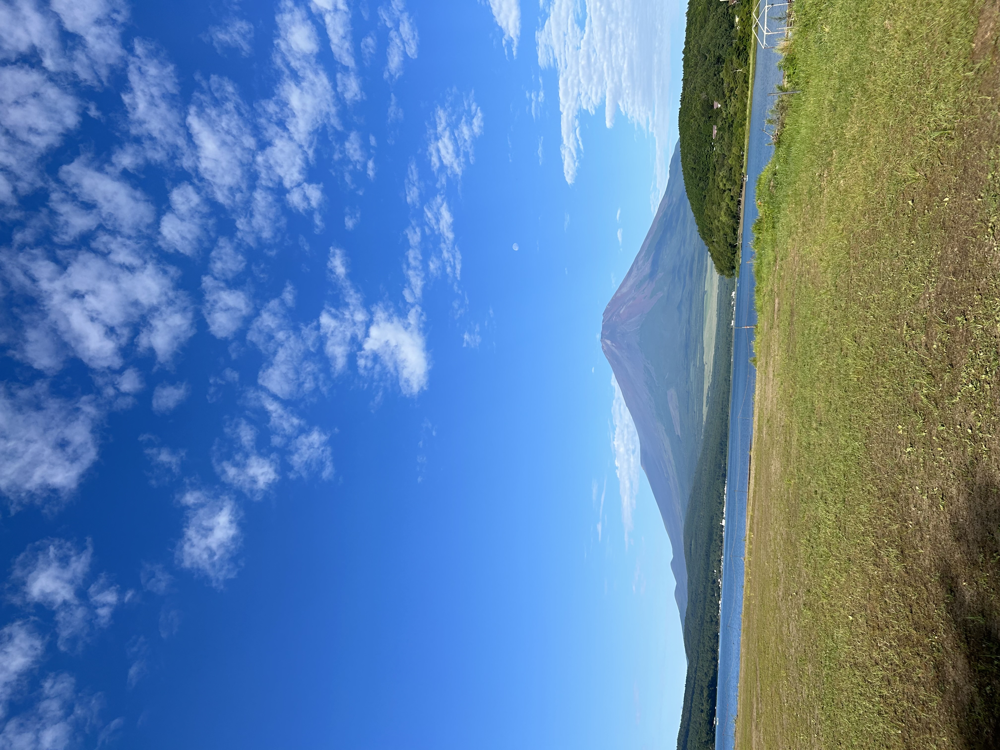
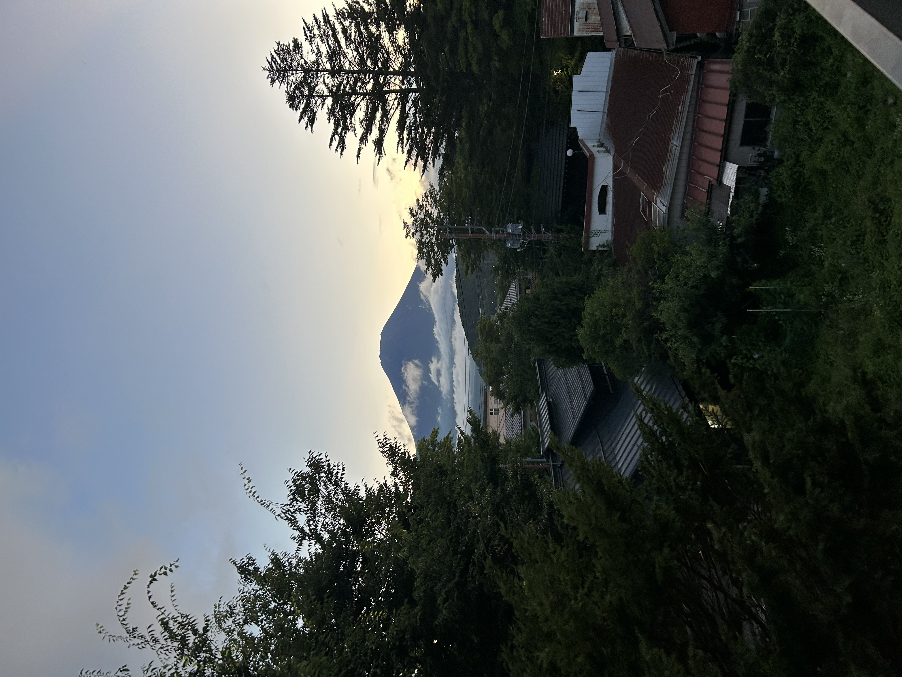
初めて東京に行きました. ラクロスの練習の一環として武者修行と呼ばれる, まあいわゆる他チームの練習に参加していろいろ学ぶって感じです.
ほんとはこの修行の前に「つま恋遠征(静岡県)」という練習試合大会に参加してたので, 今思えば体力的には鬼ハードでした.

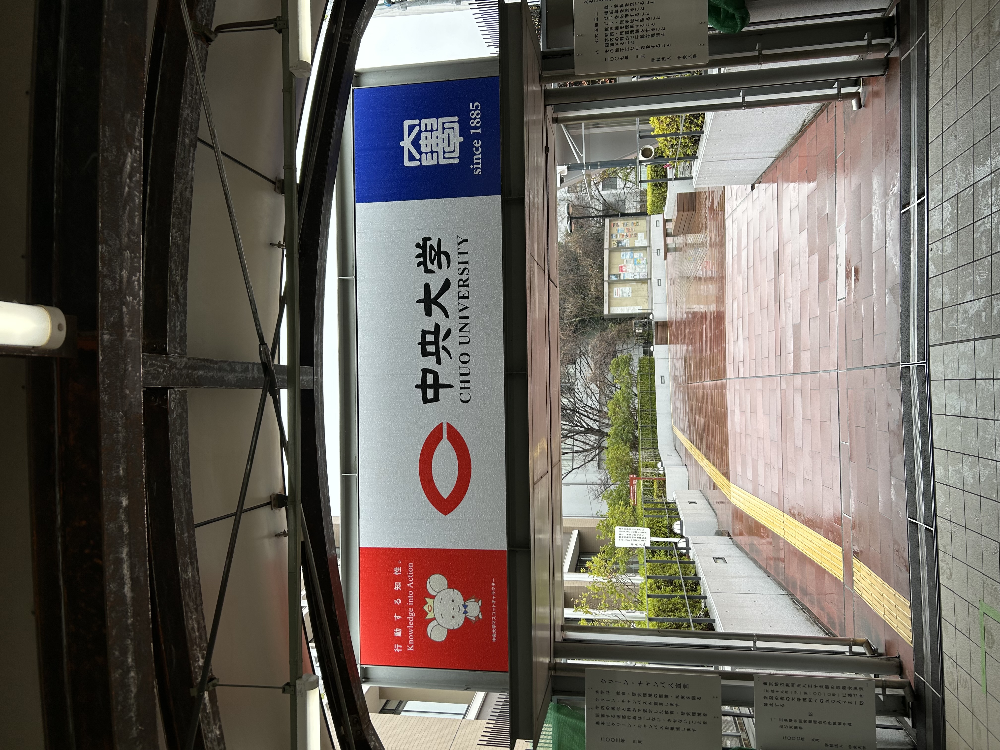
ドライブ旅行で向かったとこ. 大分にはいい滝がありますね.
山道過ぎてすごく運転が難しかった印象がある.
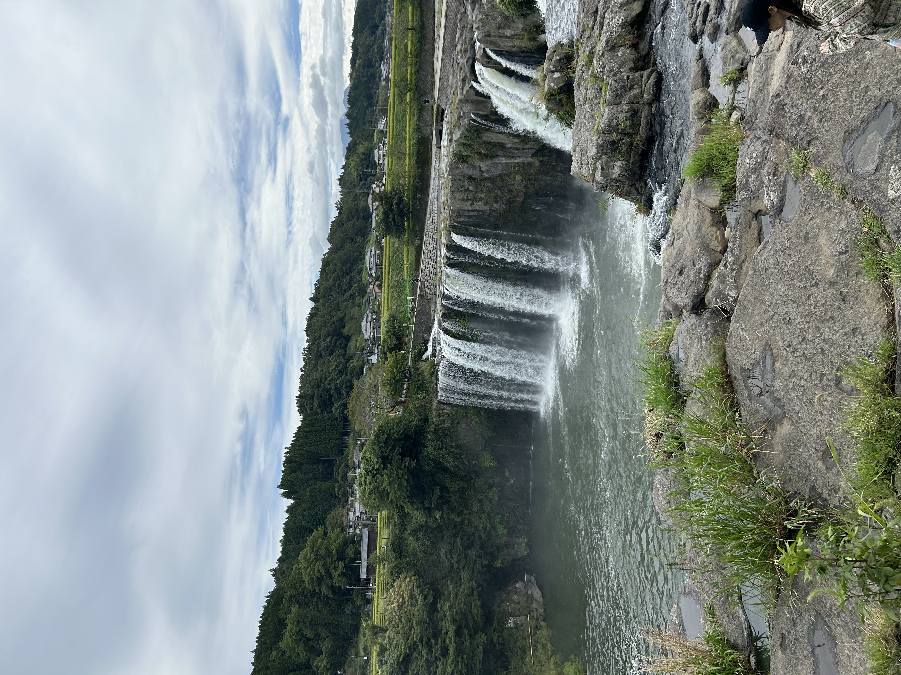
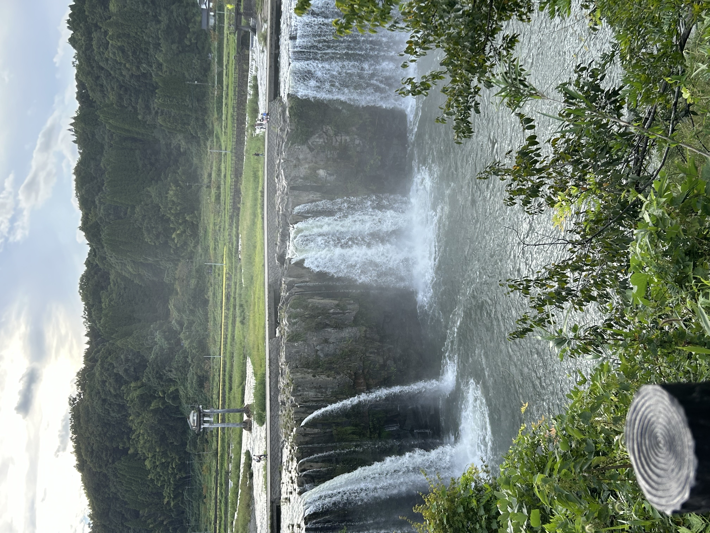
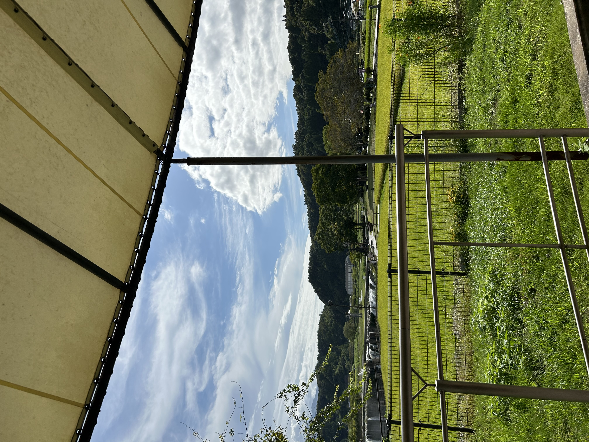
つま恋遠征後の武者修行で行きました. 品のある私なんかには到底むいてない大学で感動しました.
コムドットのメンバーの行きつけらしいラーメン屋にも行きました. (私はコムドットが全くわかりません.)

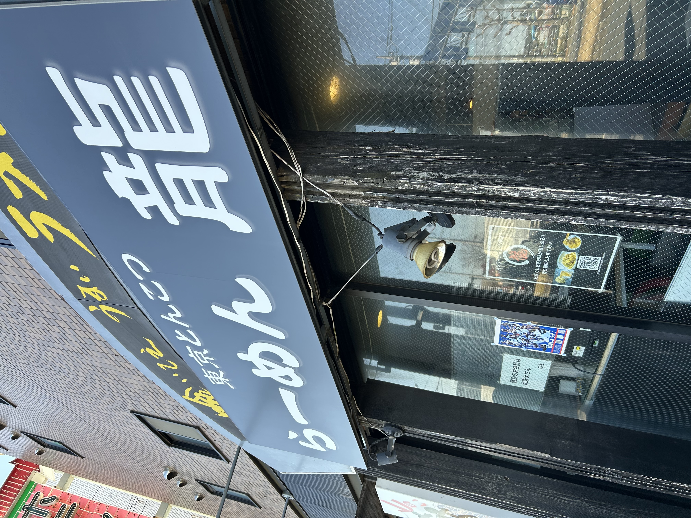
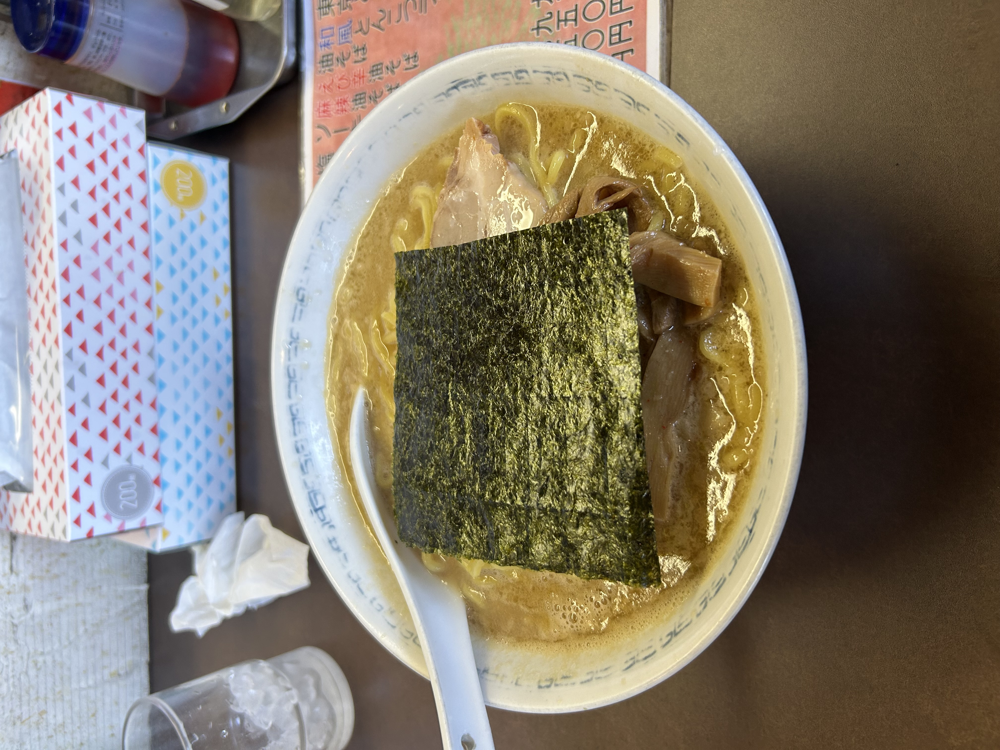
明治学院大学と青山学院大学との練習試合のために出向いた際に, 同期と観光した場所を載せておきます.
立ち食いうどんや, 商店街散策は楽しかった思い出.
城島高原の緑を感じようとしたら, 隣にあった由布岳を間違って1km以上も登山したという.
温泉はとても気持ちがよかったです. さすがは大分の温泉でした.
秋の紅葉を見に車を借りていったところ. やっぱり滝がきれいなとこが私は好きです.
熊本は小さい頃に育ったとこでもあるわけだが, こんないいとこがあるとは.
私の同期と後輩が, 全国の学生代表として全国のクラブチーム選手代表と戦うという試合(通称：A1)の応援にいきました.
試合は惜しくも1点差で学生が負けたが, 刺激のある試合だった. これにて学生ラクロスのイベントは全て終えた.
温泉旅行という名目で山形の温泉に行きました. 向こうの温泉の酸は非常に強くかなりヒリヒリしました.
ただ雪景色を見ながらの温泉は, 九州ではほぼありえないのでいい経験になりました. 山頂のほうは絶景のスキー場でしたよ.
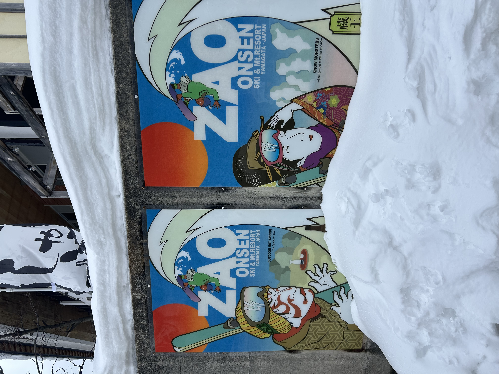
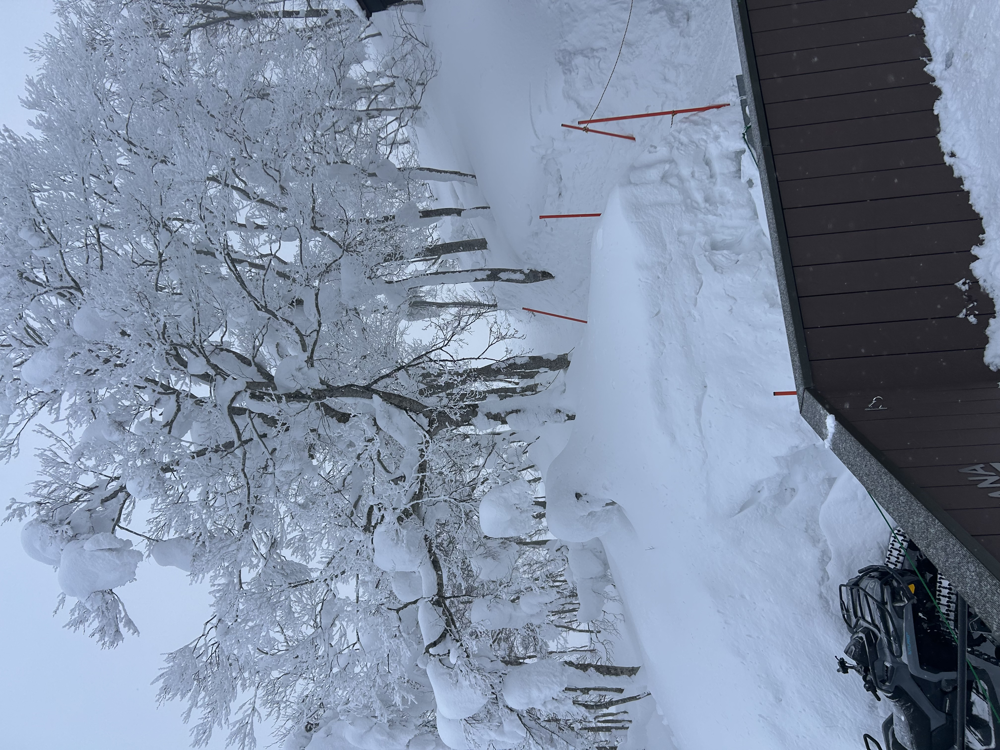
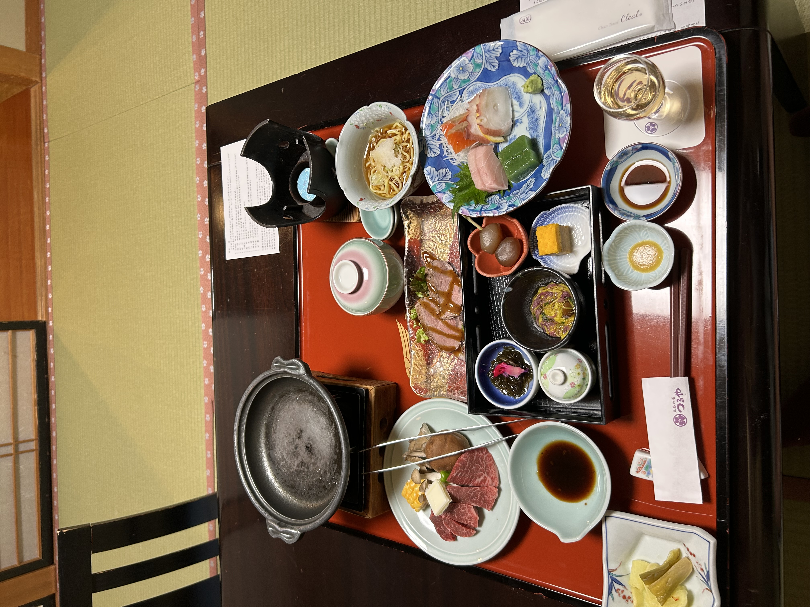
もう１つ, 蔵王樹氷に行きました. ロープウェイに乗るのに4時間近く待ちましたが, 待ったかいはあった.
まあ異世界転生でしたよ. あと奇跡的に晴れてくれたので, より絶景になりました. ほんとに同じ日本...？
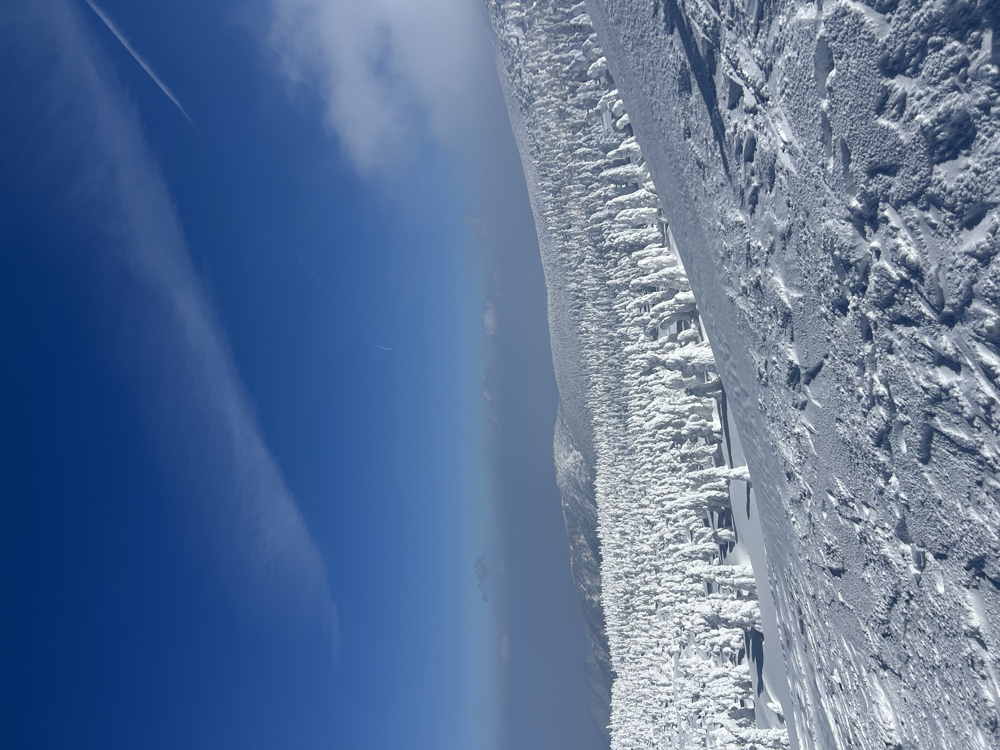
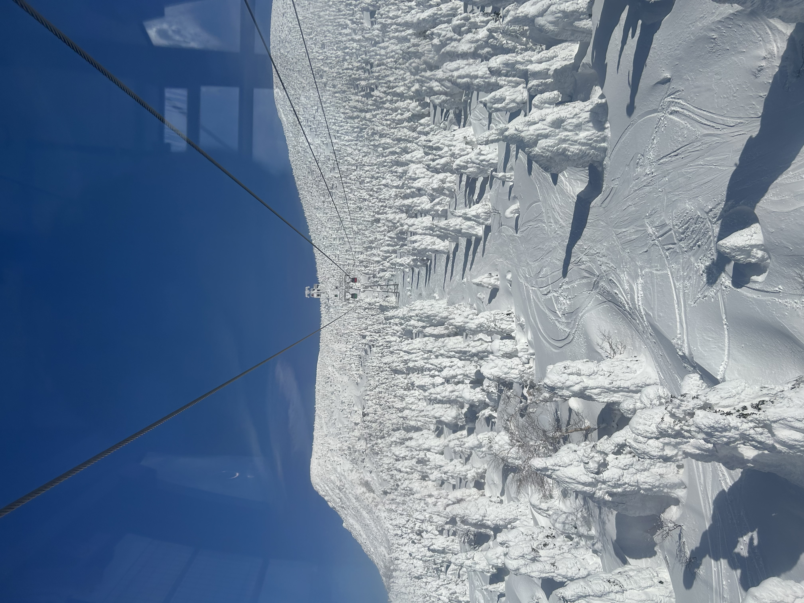
高千穂の有名な渓谷に行ってきました. あいにくの雨でしたけど, 雨は雨でまたいい景色だと思えるくらい綺麗でした.
グルメではチキン南蛮の「おぐら」, 「直ちゃん」に, 辛麵発祥の「桝元」, うどん屋の「天領うどん」に行きました.
ラクロス部の同期で卒業旅行へ. 最初はタイに行こうという話だったが, 結局は近場でも楽しめるってことなんです.
夜遅くまで酒飲んだ後の城島高原パークは楽しかったけど, しっかり乗り物酔いに敗北.
ドライブがてら少し遊ぶに行ってきました. ずっと勉強してるとハゲそうになるのでたまには気分転換も大事ですな.
普段行くカフェはスタバのようなとこばっかでしたので, 森を体感しながらのコーヒーは新鮮でしたと.
大分とか熊本の温泉はよくました行ってましたが, 実は佐賀の温泉には行ったことがなかったため初参戦.
嬉野温泉の湯の質は酸性のある湯とは違って, 穏やかで美肌の湯というだけありました. お肌トゥルントゥルン.